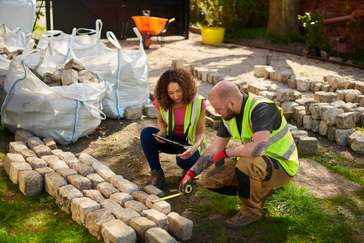
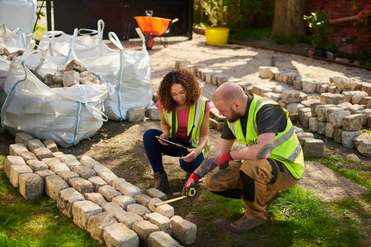
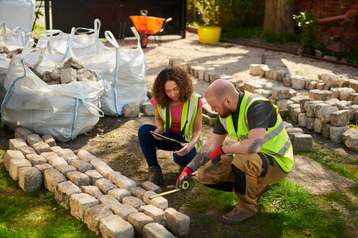
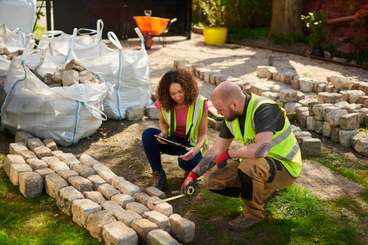

Founded in 2010 by landscape architect Melanie Taylor, Green Horizons Landscaping began as a small, family-run operation with a mission to redefine outdoor spaces while staying green. Initially focused on residential gardening, the company quickly earned a reputation for innovation and reliability, enabling expansion into commercial and large-scale landscaping projects.
In 2015, Green Horizons took a bold step towards sustainability by committing to environmentally friendly practices. By 2020, the company had fully transitioned to using 100% electric equipment, from lawnmowers to transportation vehicles. With the sustainable development goals in mind, Green Horizons has significantly reduced its carbon footprint while maintaining the highest quality standards. Today, with a dedicated corporate office and a team of over 65 experts, Green Horizons Landscaping proudly serves thousands of clients while supporting the environment.
At Green Horizons Landscaping, we are dedicated to creating beautiful, sustainable outdoor spaces at a low cost. By using only 100% electric equipment, we reduce our environmental impact while maintaining high-quality service. Our commitment to sustainability aligns with global climate goals, making us a responsible choice for your landscaping needs. With over a decade of experience, our team combines expertise and eco-conscious practices to deliver innovative solutions that enhance both your property and the planet. We have serviced over 35,000 households and businesses, with an overall rating of 4.9/5.0 stars. Our team is committed to providing personalized service, ensuring that each project meets the unique needs of our clients. With our focus on customer satisfaction and attention to detail, we ensure every project is completed to the highest standards, bringing long-lasting beauty and value to your outdoor spaces.